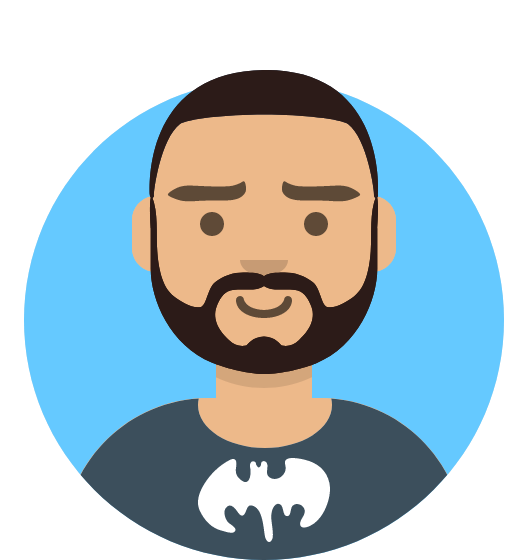

Gaël AVELINE - Curriculum Vitæ
$firstName = "Gaël"
$lastName = "AVELINE"
$age = 41
$email = "g[dot]aveline[at]giroll[dot]org"
$driversLicence = $true
$spokenLanguages = @('Français','English','Español')
Activités Professionnelles 👨💼️
BetclicGroup
Administrateur Système - mars 2020 ➡️ présent
Au sein de l’équipe IT interne de Betclic, j’assure l’administration et l’optimisation des services utilisés quotidiennement par les collaborateurs, dans un environnement hybride (Active Directory / Entra ID) et sous fortes contraintes de sécurité et de conformité.
Spécialisé dans la gestion du cycle de vie des comptes utilisateurs (onboarding, droits d’accès, offboarding), j’interviens également sur les infrastructures réseau (site, VPN, inter-sites) et cloud/on-premises.
Face à la croissance rapide de l’entreprise et aux exigences opérationnelles, j’ai mis en place des automatisations pour garantir une gestion rigoureuse, agile et scalable des processus, tout en maintenant un niveau de sécurité irréprochable.
- Entra ID (Azure AD) and Office 365 administration
- Desktops/laptops configuration and deployment (PowerShell, Intune, Autopilot/Whiteglove, Jamf, ...)
- Authenficiation unique / SSO (Okta, Azure), MFA (Azure, Duo)
- Cisco Meraki (switches and access points)
- Fortinet (Firewalls)
- Exchange Online, Sharepoint online
- Service Desk / user support (with Jira)
- Documentation (Confluence)
- Automatisations / versioning Git / GitHub (Actions), Azure runbooks, Terraform, Ansible
- Scripting : PowerShell, Python, Bash
Actulog
Coordinateur Système - septembre 2018 ➡️ mars 2020
Antsys (renommée ACTULOG en décembre 2019) est une société informatique à Bordeaux, spécialisée dans les applications et solutions informatiques pour les entreprises et les organisations professionnelles, mes tâches au sein de cette entreprise étaient les suivantes :
- Élaboration du cahier des charges, évaluation des coûts, du temps et des ressources allouées.
- Gestion des serveurs, postes de travail et périphériques, équipements réseaux Windows Server 2008 → 2016 (SQL, IIS, AD, WSUS, TSE, Impression, Antivirus, serveur e-mail), Windows 7, Windows 10
- VMWare ESX/ESXi, vCenter, vSphere
- Pare-feux (Stormshield, Fortigate), switchs, points d'accès WiFi
- GNU/Linux (Debian/Ubuntu Server, CentOS) : Nginx, Apache, MySQL/MariaDB, ISPConfig, OpenMediaVault
- Sauvegardes des données du système d’information d’Antsys et de ses clients (Rsync, sauvegardes des VM, sauvegarde des bases de données)
- Résolution des incidents (via ticketing ou assistance téléphonique des utilisateurs sous et hors contrat)
- Optimisation des ressources informatiques et supervision de la sécurité de ces dernières (LibreNMS, Munin)
- Proposition de scenarii d’évolution des infrastructures
Free / Equaline
Technicien Helpdesk Confirmé - février 2012 ➡️ août 2018
Au sein du département informatique d'un centre d'appels d'un célèbre FAI :
- support auprès des employés du centre / gestion et maintenance d'un parc de +500 postes et autant de téléphones VoIP
- prise en charge des tickets créés par les utilisateurs et escalade au support approprié si nécessaire
- refonte de l'interface de création de tickets (PHP/MySQL adossée à OTRS), utilisée sur tous les centres d'appels du groupe
- en 2012, migration des postes des conseillers de Microsoft Windows XP à Windows 7 puis Ubuntu 12.04
- durant l'été 2013, déménagement du site sans interruption de l'activité
- installation des nouveaux serveurs et brassage des baies techniques sur le nouveau site
- gestion des serveurs, postes de travail et périphériques, équipements réseaux
- ProxmoxVE (virtualisation d'une grande partie des serveurs), Docker
- GNU/Linux (Debian / Ubuntu Server / Ubuntu desktop) : NFS, NIS, Samba, GLPI, Munin, Nagios, OTRS, Bind, isc-dhcp-server, Squid, Postfix, ZFS
- switchs / routeurs CISCO
- Windows Server 2008/2012/2016 (Active Directory, DNS, serveur d'impression), Windows 7
Lycée Montesquieu (Bordeaux)
Emploi vie scolaire TICE - 2010 ➡️ 2012
- gestion et maintenance du parc informatique
- support aux utilisateurs
- gestion et actualisation du site web de l’établissement (propulsé par Joomla)
- migration du contrôleur de domaine principal d'un serveur physique à un serveur virtualisé (KVM)
- clonage, déploiement et raccordement au domaine de 80 postes clients
- optimisation de l'utilisation de la bande passante (SDSL) par une mise en cache des sites webs les plus consultés (squid-cache)
- monitoring du réseau à l'aide de Fully Automated Nagios (sous CentOS)
Luxener
Gestionnaire en maintenance et support en informatique (alternance) - 2007 ➡️ 2009
- gestion et maintenance du parc
- support aux utilisateurs
- gestion et administration de sites web (e-commerce, sites vitrines)
- SAV clients (courriel et téléphone)
- tests des produits avant mise en vente et création des fiches produits (photos, texte, ...)
Compétences 💪️
✅ Gestion du parc informatique (client et serveurs), réseau local et distant, sécurité et administration du réseau (Intune, Jamf, Google Workspace, Ansible, Active Directory, Apple Business Manager)
✅ Commutation, routage, VPN, pare-feu (Fortigate, Stormshield, Cisco, Meraki)
✅ Gestion de projets et documentation (Jira / Confluence)
✅ Administration Systèmes GNU/Linux (serveur/client)
✅ Administration Systèmes Microsoft Windows (serveur/client)
✅ Langages :
- Scripting / programmation : Powershell, Python, Bash, connaissances en PHP et JavaScript/Typescript
- Balisage : HTML/CSS, Markdown, LaTeX, doku/mediawiki
✅ Monitoring (Datadog, Grafana, Cacti, Munin, Nagios, Centreon, Intermapper, LibreNMS)
✅ Virtualisation (KVM/Qemu, ProxmoxVE, Virtualbox, VMWare, HyperV, Nutanix, …)
✅ Sauvegarde (VEEAM, BackupAssist, Rsync, XSI)
PowerShell Python Git Azure Bash Windows Server GNU/Linux macOS MDM Jamf Intune Mail administration Entra ID Exchange Jira Firewalls File Storage Backup Automation Scripting
2025
Jamf Certified Tech - Jamf Pro
2019
Certification administrateur Stormshield
2018
Certification ITIL
2007 ➡️ 2009
Gestionnaire en Maintenance et Support en Informatique
CÉSI Aquitaine - Poitou-Charentes, Blanquefort (33)
Formation alternante - Titre de niveau III
2003 ➡️ 2005
Cursus LLCE anglais
Université Michel de Montaigne - Bordeaux III
2003
Baccalauréat Littéraire
Lycée Augustin Fresnel - Bernay (27)